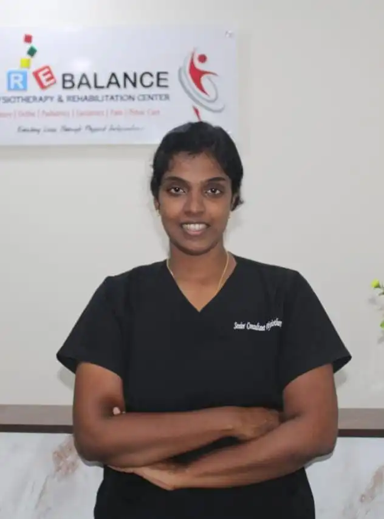
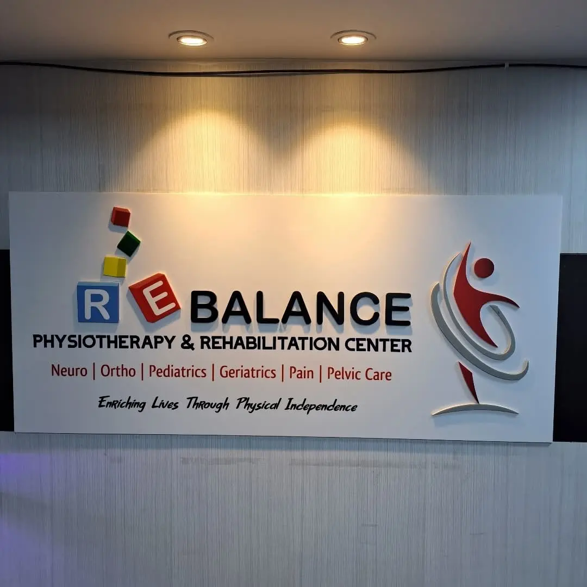
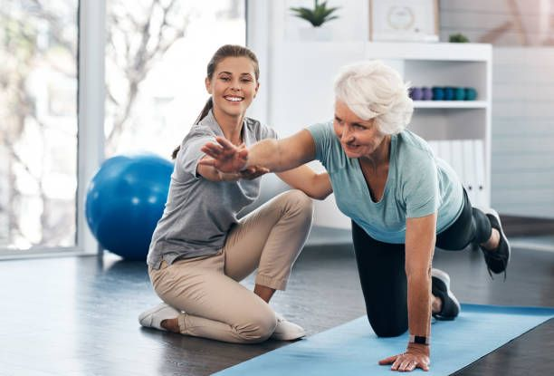
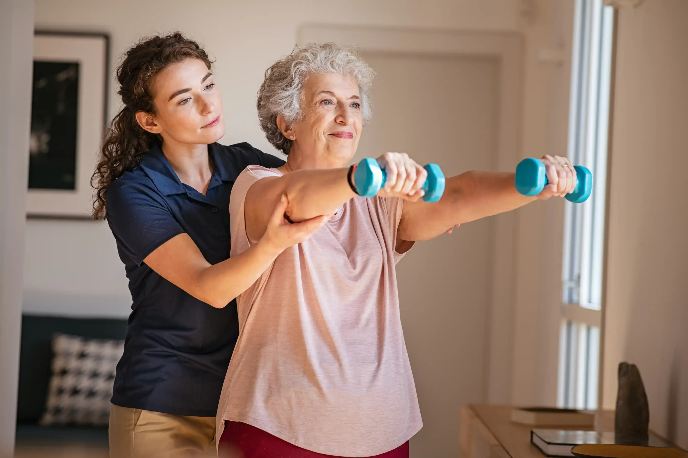
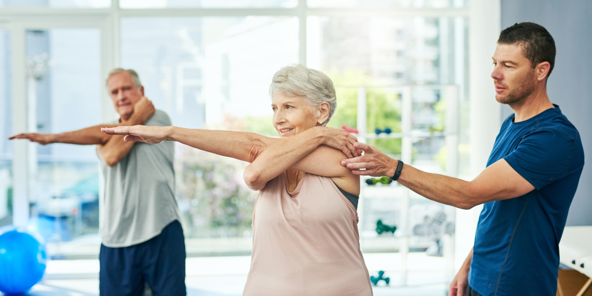
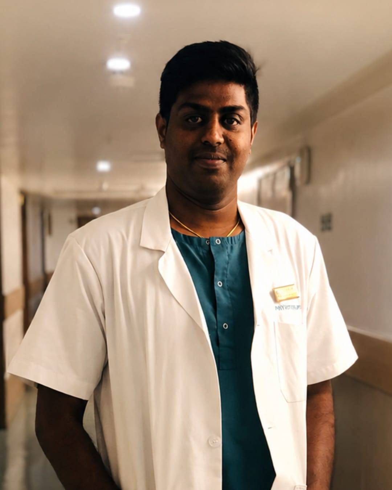

Dr. Christina Nissi Arun
MPT (Neurology)
Areas of Expertise: Stroke Rehabilitation • Parkinson's Rehabilitation • Vestibular Rehabilitation • Balance & Gait Training • Geriatric Rehabilitation
ADYAR, CHENNAI · NEURO REHABILITATION CENTRE
Expert Neuro Physiotherapy & Rehabilitation in Chennai, Helping Stroke, Parkinson's, Vestibular Disorders, Spinal Cord Injury, and Neurological Conditions regain independence through evidence-based rehabilitation.
Success Rate
Happy Clients
Days
Why Rebalance
GET IN TOUCH

RECOGNITION
Ms. Christina Nissi's clinical excellence has been recognised with several national honours in physiotherapy.
ABOUT THE CENTRE

Rebalance Physiotherapy & Rehabilitation Centre is Chennai's dedicated neuro rehabilitation practice — built around a simple premise: recovery is individual, and therapy should be too. Every programme here is designed around evidence, measured against outcomes, and delivered one patient at a time.
We work with people recovering from stroke, Parkinson's disease, vertigo and balance disorders, spinal cord injuries and a wide range of neurological and musculoskeletal conditions — bringing hospital-grade rehabilitation science into a calm, dignified clinical setting.
Protocols drawn from current rehabilitation research, not routine.
Therapy built around the person's life, not a standard template.
Every plan is reassessed and adjusted as recovery progresses.
Modern neuro-rehab methods delivered by experienced therapists.
SUCCESS STORIES
VISION
MISSION
WHY REBALANCE
Every protocol is grounded in current clinical research and measured against real recovery outcomes.
A dedicated therapist for every session — no rotating staff, no shared attention.
Programmes built around each patient's condition, goals and pace of recovery.
Clinical-grade therapy delivered at home for patients with limited mobility.
We train the people around each patient, so good practice continues outside the clinic — not just the patient alone.
Progress is measured session to session, with clear, shared benchmarks.
TREATMENTS
Every programme below is delivered one-to-one, and adapted as your recovery progresses.

Common Symptoms
Weakness or paralysis on one side of the body.
Slurred speech and difficulty swallowing.
How Physiotherapy Helps
Task-specific exercises rebuild movement and strength.
Speech and swallow coordination improve
with guided therapy.
Common Symptoms
Tremors, stiffness, and slowed movement.
Shuffling gait and reduced balance.
How Physiotherapy Helps
Targeted mobility drills improve flexibility and coordination.
Balance training reduces fall risk
and builds confidence.
Common Symptoms
Sudden spinning sensation or dizziness.
Nausea and unsteadiness with head movement.
How Physiotherapy Helps
Vestibular rehabilitation retrains the brain's balance response.
Specific head and eye exercises
reduce dizziness episodes.
Common Symptoms
Unsteady walking and frequent stumbling.
Fear of falling during daily activities.
How Physiotherapy Helps
Structured gait retraining improves stability and stride.
Strength and proprioception work rebuild
walking confidence.
Common Symptoms
Loss of sensation or movement below the injury site.
Muscle spasms and reduced trunk control.
How Physiotherapy Helps
Progressive strengthening restores functional movement.
Adaptive techniques support independence
in daily tasks.
Common Symptoms
Numbness, tingling, or burning in hands and feet.
Weakness affecting grip and walking.
How Physiotherapy Helps
Sensory re-education improves nerve function over time.
Strength and balance exercises reduce
injury risk.

Common Symptoms
Stiffness and reduced range of motion.
Pain radiating into shoulders or head.
How Physiotherapy Helps
Manual therapy releases tension and restores mobility.
Postural correction exercises prevent
recurrence.
Common Symptoms
Dull ache or sharp pain in the lower back.
Difficulty bending, lifting, or sitting for long.
How Physiotherapy Helps
Core strengthening stabilises the spine and eases pain.
Guided movement therapy restores healthy
posture and function.
Common Symptoms
Shooting pain from the lower back down the leg.
Numbness or tingling along the nerve path.
How Physiotherapy Helps
Nerve mobilisation techniques relieve pressure and pain.
Targeted stretches and strengthening
prevent flare-ups.
Common Symptoms
Gradual stiffness and loss of shoulder movement.
Pain that worsens with reaching or lifting.
How Physiotherapy Helps
Joint mobilisation restores range of motion gradually.
Progressive stretching rebuilds strength
and flexibility.
Common Symptoms
Joint pain, swelling, and stiffness, especially in mornings.
Reduced flexibility with everyday
movement.
How Physiotherapy Helps
Low-impact strengthening protects and supports joints.
Manual therapy eases stiffness and improves
movement.
Common Symptoms
Pain during walking, climbing stairs, or standing.
Swelling and instability in the joint.
How Physiotherapy Helps
Strengthening around the knee improves stability.
Movement retraining reduces strain and everyday
pain.
Common Symptoms
Stiffness and weakness after cast removal.
Limited movement and apprehension using the limb.
How Physiotherapy Helps
Gradual mobility and strength work rebuild function.
Guided loading restores confidence in the
healed limb.
Common Symptoms
Swelling, stiffness, and reduced strength post-op.
Limited range of motion around the surgical
site.
How Physiotherapy Helps
Structured rehab protocols restore strength safely.
Progressive exercises rebuild full function
and mobility.
Common Symptoms
Recurring strain from poor posture or workstation setup.
Fatigue, tension, or pain during daily
tasks.
How Physiotherapy Helps
Workspace and posture adjustments reduce strain.
Movement and stretching routines prevent
long-term issues.
Common Symptoms
Localised muscle knots and referred pain.
Tenderness and tightness in affected muscle groups.
How Physiotherapy Helps
Trigger point release relieves muscle tension.
Stretching and strengthening prevent recurring
tightness.

Common Symptoms
Limited mobility and weakness on one side of the body.
Difficulty with daily tasks like dressing
or walking.
How Physiotherapy Helps
In-home sessions rebuild strength and movement gradually.
Familiar surroundings support faster,
comfortable recovery.
Common Symptoms
Tremors, stiffness, and slower everyday movement.
Increased fall risk while moving around the
house.
How Physiotherapy Helps
Home-based mobility and balance drills improve safety.
Consistent one-to-one care adapts to
changing needs.
Common Symptoms
General weakness, stiffness, and reduced mobility.
Difficulty with balance and everyday movement.
How Physiotherapy Helps
Gentle strength and mobility work improves independence.
Regular in-home sessions build confidence
safely.
Common Symptoms
Joint or bone pain limiting movement at home.
Stiffness following injury or long-term joint
issues.
How Physiotherapy Helps
Targeted home exercises restore joint function.
Guided progress reduces pain and rebuilds
mobility.
Common Symptoms
Swelling, stiffness, and weakness after surgery.
Limited mobility during early stages of recovery.
How Physiotherapy Helps
Home-based rehab restores strength without travel strain.
Progressive exercises rebuild full
function safely.

Common Symptoms
Unsteady walking and reduced confidence moving around.
Previous falls or near-falls at home.
How Physiotherapy Helps
Balance and strength training reduce fall risk.
Home safety guidance supports confident movement.
Common Symptoms
Dizziness or unsteadiness during standing or walking.
Difficulty maintaining stability on uneven
surfaces.
How Physiotherapy Helps
Progressive balance exercises improve stability over time.
Core and lower-limb strengthening
supports steady movement.
Common Symptoms
Muscle loss and reduced ability to perform daily tasks.
Fatigue during routine physical activity.
How Physiotherapy Helps
Guided resistance exercises rebuild functional strength.
Personalised programmes support long-term
independence.
Common Symptoms
Reduced bone density increasing fracture risk.
Postural changes and mild back pain over time.
How Physiotherapy Helps
Weight-bearing exercises support bone health safely.
Posture and balance work reduce fracture
risk.
Common Symptoms
Declining stamina and general physical activity levels.
Reduced motivation or opportunity for
regular movement.
How Physiotherapy Helps
Structured fitness plans improve stamina and mobility.
Ongoing supervision keeps activity safe and
consistent.
TREATMENT JOURNEY
Detailed neurological and physical evaluation to understand the condition and its impact.
Clear, realistic recovery goals agreed with the patient and family.
A therapy plan matched to the specific condition, stage and pace of recovery.
Guided exercises to continue progress safely between sessions.
Ongoing outcome tracking, with the plan adjusted as recovery develops.
Discharge planning focused on sustained mobility, safety and confidence.
OUR CLINICIANS
MPT (Neurology)
Areas of Expertise: Stroke Rehabilitation • Parkinson's Rehabilitation • Vestibular Rehabilitation • Balance & Gait Training • Geriatric Rehabilitation

MPT (Cardiopulmonary Physiotherapy)
Areas of Expertise: Cardiac Rehabilitation • Pulmonary Rehabilitation • Chest Physiotherapy • ICU & Critical Care Rehabilitation • Post-Operative Recovery
PATIENT VOICES
"I'd like to express my heartfelt gratitude to Dr. Christina for her exceptional care and expertise in treating my vestibular dysfunction. Her meticulous approach and clear explanations helped me regain balance and confidence in daily life."
Hema Malini — Google Review, 9 months ago
"My wife Jeyanthi has been coming here for joint pain and giddiness. After treatment she is like a new person — active, and can climb stairs and do daily chores without any assistance. Great place, God bless them."
David Koilraj — Google Review, 4 months ago
"Had a couple of bad knots in my back — lat and collar. Two sessions involving ultrasound and heat therapy and I recovered well. Thanks to Christina for being really consultative and practical with her treatment."
Sujay Seetharaman — Google Review, 6 months ago
"I had a great experience at this physiotherapy centre. The treatment was professional, effective, and well structured. Special mention to Subhiksha for her excellent work — she was very attentive and patient."
Vanaja T. — Google Review, 7 months ago
"For physiotherapy it is always very important to go to the right person for effective recovery, else it is wasted time, effort, and money. So by personal experience, I strongly recommend Rebalance clinic."
Geetha Balaji — Google Review, 7 months ago
"I'm extremely grateful to my physiotherapist, Dr. Christina, for the exceptional care and treatment provided. Every step of the process was explained clearly and with great patience, making me feel fully confident and informed."
Iggi Doss — Google Review, a year ago
GET IN TOUCH

Parkinson's and mobility conditions respond well to the right rehab plan. Talk to our neuro team directly.
Call Us +91 81483 06070These can be early signs of a neuro issue worth checking. Write to us, our clinicians reply within a day.
Email Us contact@rebalancerehab.inNot sure which programme fits? Visit us or send your query — we'll point you in the right direction.
Contact Us Jupiter Campus, H1A, 1st Floor (LIFT available), Habib block, Durgabai Deshmukh Rd, Raja Annamalaipuram, Chennai, Tamil Nadu - 600028QUESTIONS
Rehabilitation can safely begin within days of a stroke, once a patient is medically stable. Early, structured therapy is strongly associated with better long-term mobility and independence.
While physiotherapy doesn't alter the underlying disease process, targeted exercise and gait training measurably improve balance, walking, and daily function — and can help manage symptoms like freezing of gait.
Vertigo is often related to the inner ear's vestibular system, though it can also stem from neurological causes. We assess the underlying source and use vestibular rehabilitation therapy — specific head, eye and balance exercises — to resolve it.
Physiotherapy is a broad discipline covering musculoskeletal and movement-related conditions. Neuro rehabilitation is a specialised branch focused on conditions affecting the brain, spinal cord and nervous system — such as stroke, Parkinson's, and spinal cord injury.
Yes. Our home physiotherapy programme covers stroke, Parkinson's, elderly, orthopaedic and post-surgical care, delivered by the same clinical team that treats patients in-clinic.
Our Healthy Ageing programme includes fall prevention, balance and strength training, osteoporosis management, and senior fitness — designed around each patient's mobility level and living situation.
Duration depends on the condition and its severity. Some musculoskeletal programmes run 4–8 weeks; neuro rehabilitation for stroke or spinal injury often spans several months, with progress reviewed and reported regularly.
You can book directly through our contact form below, call the clinic, or message us on WhatsApp. We'll confirm your first assessment slot within one working day.
Jupiter Campus, H1A, 1st Floor (LIFT available), Habib block, Durgabai Deshmukh Rd, Raja Annamalaipuram, Chennai, Tamil Nadu - 600028 — with parking on-site and easy access for patients with limited mobility. Full directions are in the Contact section below.
VISIT THE CLINIC
Jupiter Campus, H1A, 1st Floor (LIFT available), Habib block,
Durgabai Deshmukh Rd, Raja Annamalaipuram,
Chennai, Tamil Nadu - 600028
Mon – Sat: 10:00 AM – 8:00 PM